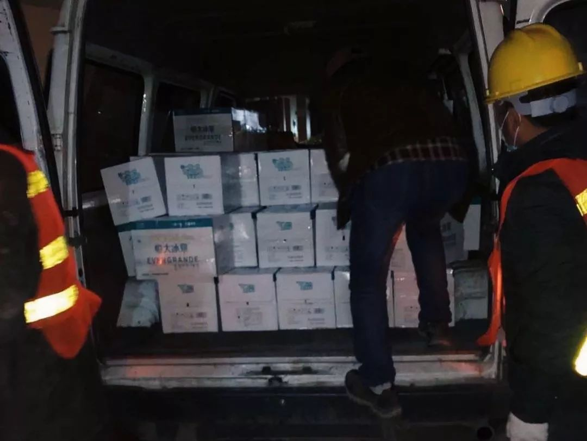
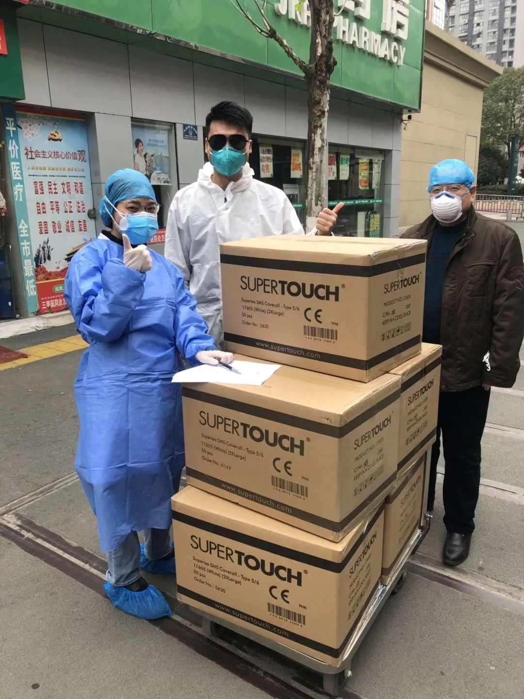
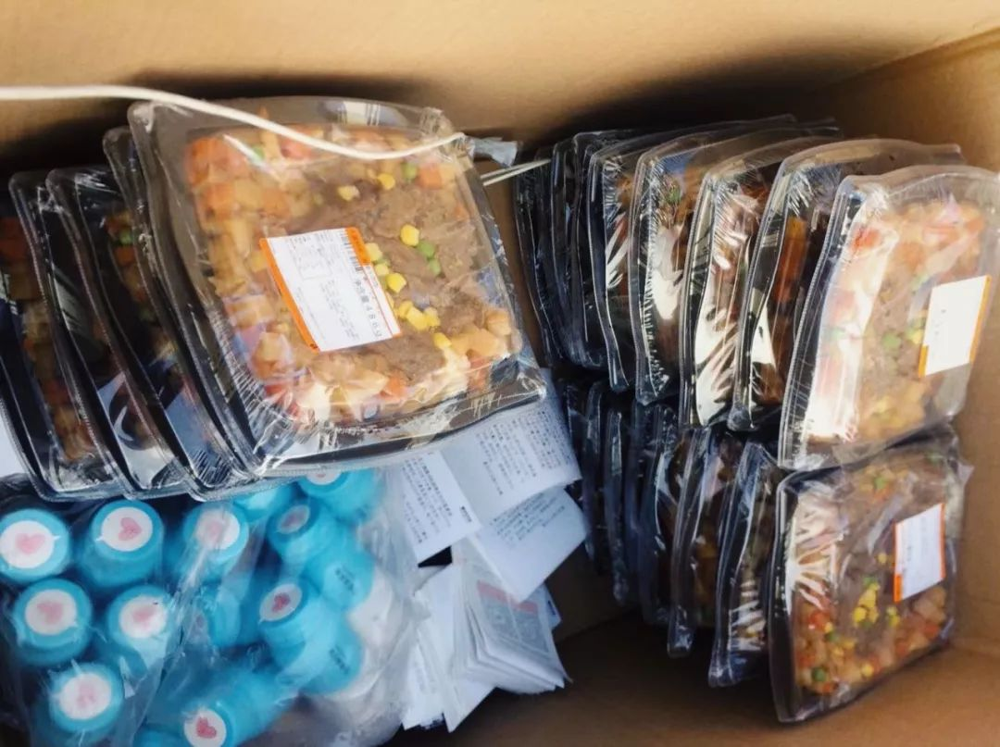
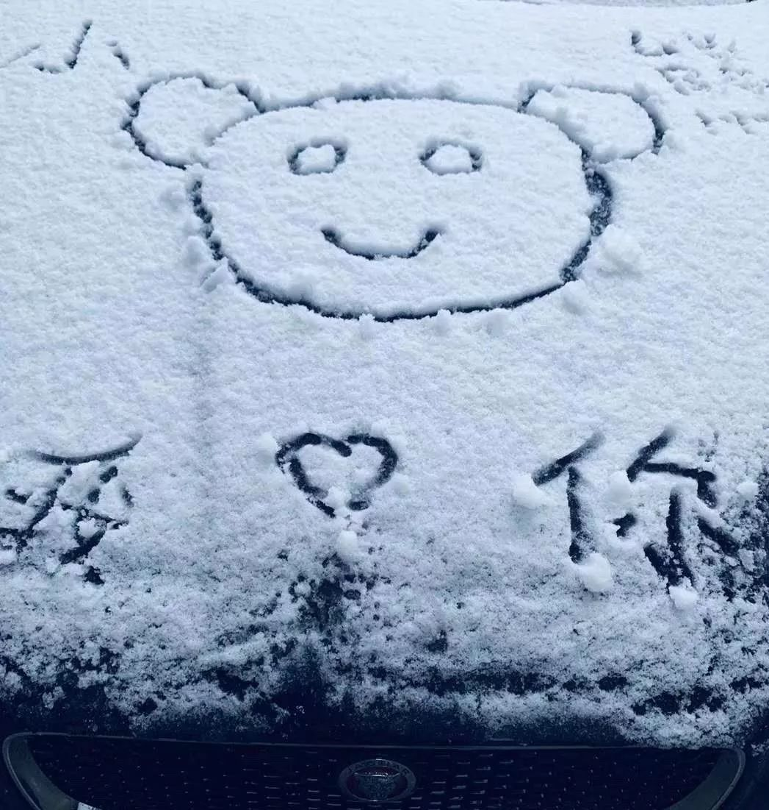
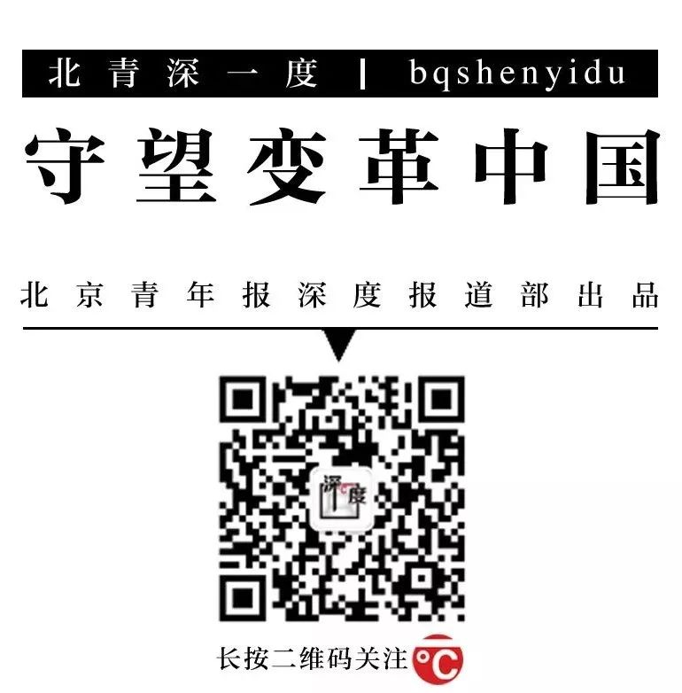

“请把我女朋友踢出志愿者群”
原文链接 备份链接 曹彦/ 华中科技大学新闻与信息传播学院 伍杨的一身“行头”几乎把整个人都吞了。 臃肿的棉袄外套着白色的防护服，戴着皱起来的蓝色防护手套，头顶是一个半旧棒球帽，只露出染过色的齐肩短发，透明护目镜下是两层叠加的口罩。她站在 …
**采写/胡琪琛
**
编辑/计巍 宋建华

志愿者在雨中送爱心餐
在这次新冠肺炎疫情中，李小熊的身份有很多。她是司机志愿者、志愿车队队长、捐款人、募捐人，因为自己被感染，成了新冠肺炎感染者，又因父母感染，成了感染者家属。
她曾在返回武汉当天捐出1万5千元为医院买口罩，也曾用仅仅4小时的时间组建了一支志愿车队为医院运送物资；她目睹过医生苦求一只口罩和几天几夜没睡的劳累；也感受过打无数遍120仍没有床位的绝望；她曾在做志愿者时被欺骗和误解，也****感受过四面八方涌来的善意。
如果有的选，她只想做个生活在武汉的普通女孩——一个29岁“爱美”的医疗美容医师，副业是“游戏主播”。
现在，她的父亲还在同济医院的重症病房治疗，母亲正在酒店隔离，她自己刚做完新一轮的核酸检验，正在等待最终结果。
这是她的故事，也是千千万万志愿者和普通人的故事。在这座“英雄的城市”，她并不想成为一个“英雄”，只是想不被绝望困住。
 志愿者给医院送物资
志愿者给医院送物资

四小时组一支车队
1月23日晚上，李小熊的手机被打爆了。
一分钟里她接了两个来电，新的电话刚接不过几秒钟，又有下一个插了进来。手机里还有上百条短信和微信等着她回复。
来电的是一个个陌生人，年轻人居多，语气无一例外地焦急，“我要捐款，你能帮我买些物资送到医院吗？“
“加我微信说具体要求。”李小熊迅速挂了电话，没时间多说一句话。
12个小时前，1月23日7点30分前后，李小熊搭上了从长沙回武汉的火车，满心期待着和父母团圆，与男友相聚。但很快，因为没戴口罩，她被乘务员严厉地说了一通。“我身边还没有人得（新冠肺炎），就还没有那么紧张。”李小熊解释。
两个半小时后，武汉封闭交通，全市的城市公交、地铁、轮渡、长途客车暂停运营。李小熊在这之前抵达武汉。
那并不是她所熟悉的武汉，眼前的一切让她感到压抑和紧张：出站后，“人很少很少，很荒凉”，除了自己之外几乎所有人都戴了口罩；朋友圈要么在高价卖口罩，要么在高价求口罩；很多医院发出的物资求助信在社交媒体上被频繁转发。
武汉大学中南医院是武汉第一家发出求助信的医院，它离李小熊的家不过3公里，开车只用8分钟，李小熊觉得作为附近的居民，应该做些什么。当晚7点41分，她发了一条朋友圈，“我要大量买（口罩），谁有资源，我很着急。”
在朋友的帮助下，她联系到了武汉附近的一家口罩生产商，自己花钱买了一万五千元的口罩。
她没想到的是，很多人打来电话，想让她帮忙代买物资一同捐赠给医院。想捐赠的人太多，募集物资多到“一个人根本拉不了”。10点整，她又发了一条朋友圈，“打算组建一个车队，专门运送大家捐助的物资给各个医院，有住在武昌愿意当志愿者的亲人联系我。”
电话再次涌来，群里很快加入了70多名司机志愿者。
医生也打电话找她求助，“下班了没车，车队能否帮忙送一下？”李小熊意识到，车队除了送物资，还可以送医生。她再次发朋友圈，“武汉市内只要是医护人员进出打不到车的，请随时和我联系，24小时待命，我负责安排接送”。
随着这条朋友圈不断被转发，李小熊感觉一时间“似乎全城的医院都给我电话了”。她加上他们的微信，将有坐车需求的医生和志愿者司机拉进一个群里，让大家自行对接，并且将群二维码分享到了朋友圈，让有需求的人自行扫码入群。之后，她的微信提示音以秒的频率持续响起。
从当晚那条“求口罩”的朋友圈发出之后的四个小时里，李小熊共发了20条朋友圈，接打了400多个电话，收到100多条短信，添加1000多名好友，回复上千条微信，3个新建的微信群被扫满。
朋友告诉她，善缘义助公益基金会执行秘书长张小艳也在组建志愿车队，李小熊加上了她的微信。
“她主动找到我，说如果我这有什么需求都可以跟她提。” 张小艳说。很快，张小艳的志愿车队群也都爆满。
李小熊成为善缘车队武昌区域队长，负责车队的调度，同时也是物资捐赠者与医院、医护人员与司机之间的信息中转站。
晚上11点58分，李小熊发了当晚最后一条朋友圈，“我们还需要大量的防护服和护目镜，符合医疗水平的厂商可以联系我，各区志愿者还需要人手，大家来之前请与家人商量好，这不是开玩笑的。”

志愿者运送的物资接受交警检查
困难、误解和委屈
起初，李小熊并没有告诉家人自己在做志愿车队的事，直到因为手机24小时持续作响，她吃饭时也在盯着手机，家人发了脾气，她才把这件事说了出来。
起初父母怕她感染不让她出门，后来理解了她，让她“保护好自己”。
善缘车队一共55个私家车队队长，张小艳说，李小熊让她印象很深刻，“她一边发动车队，一边自己也接送，一边募捐。”
1月26日，雷神山医院刚施工不久，赶上下雨，工人们急需雨鞋、雨衣和冲锋衣。当天下午，张小艳在朋友圈发布募捐信息，凌晨，她收到李小熊发来的微信，“物资我已经全部筹集好了，这两天就会寄过去。”
“简直神速！”张小艳说。
看到雷神山医院急需物资的信息后，李小熊第一时间发朋友圈广而告之。“我这个微信号之前就加了三四千人，大家都帮我转发了募捐信息，也相信我，很快就有人直接来找我。”李小熊说。
远在北京的张晨就是找到小熊的捐赠人之一。她在北京经营一家品牌运动服专卖店。当晚，她在群里看到了同行转发李小熊的朋友圈求物资的截图，马上加了她。
“她跟我说了很多，这绝对是真实的，我觉得她不会撒谎，大家谈到一块来了。”张晨说。李小熊问她，衣服怎么买？张晨说，我不要钱。
之后，张晨一直关注着李小熊的朋友圈，“就觉得小熊特别努力，很晚了还在微信群里协调物资，今天说哪个医院需要车，明天又是哪个医院需要物资，互相做媒介”。
武汉住家集团董事长卞亚光也在善缘车队的微信群里。当时，他有一名北京的同学要捐物资到武汉。车开到武汉附近，因交通封闭无法通行。他求助小熊，“就是她帮我介绍了一个人，安排了六辆车，对接物资送到湖北物流中心后，又分配到了各个医院”。
二十多天的时间里，卞亚光目睹善缘车队的群里许多司机因为各种原因陆陆续续退出，但李小熊一直在，“做一次好事容易，一直做好事很难。我对小熊还是挺佩服的。”
“是很难”，李小熊毫不否认这一点。从组织车队到现在，每个阶段有不同难处。
最近她的难是五十吨蔬菜。
有医院向她反映，肉和蔬菜极其紧缺，吃饭很成问题。李小熊发了愁，湖北省内现在每个城市都物资紧缺，只能从外省想办法。正好她的十年挚友有个云南朋友，愿意捐赠五十吨蔬菜。
但蔬菜长在云南的大棚里，如何运来武汉又成了棘手的问题。
李小熊和善缘车队的几个负责人想到，或许可以找云南当地的卡车司机，付运费让他们运过来，但至今未果。“给钱都不来，往武汉送东西回去起码隔离14天，谁愿意吃这个亏？”李小熊说。
他们又试着联系武汉本地的司机。从武汉开车去云南不眠不休来回跑，也要个四天，蔬菜就算能运回，也怕早烂了。
哪怕蔬菜真的上了高速，也可能面临种种问题。“一段高速可能有七八个检测点要查车，你说是私人捐赠，交管有可能会觉得你是高价贩卖，给你没收了。”
李小熊也考虑过快递，但这蔬菜50吨，快递费几乎上万，不太实际：捐了五十吨蔬菜，总不能让捐赠者再掏一笔物流费；让医院拿钱，不太合理也没人愿意；自己出，“很多志愿者月薪就几千块，没有这么多钱。”
蔬菜哪怕到了武汉市内，也还要经过一系列手续。“还需要质检报告，我有朋友之前联系了一家协会想要捐赠几万斤蔬菜，但就是卡到检测报告这个环节，最后蔬菜全烂掉了。”李小熊说。
李小熊还在想办法。从车队成立至今，她一直在想办法解决各种问题。
车队成立头两天，医生用车需求远大于司机数量，李小熊白天处理物资对接事务，每晚“不那么忙”的时候驱车接送医生，天亮才回，曾连续两天没有睡觉。
车队成立第三天，1月25日下午，武汉市新型肺炎防控指挥部发出通告，从1月26日零时开始，除经许可的保供运输车、免费交通车、公务用车外，中心城区区域机动车禁行。
因缺乏防护物资，此时善缘车队其他区域车队也有几名司机因感染相继退出。
当天下午，她在朋友圈发出公告，“很遗憾，武汉善缘车队今天不能接送医护人员了，一是因为机动车禁行通知，一是因为爱心车主没有足够的防护服等装备，很不安全。”
汽修行业的张顺顺是善缘车队的志愿车主之一，看到李小熊的公告后，他还是不想退出。
“但要保护好自己才能更好地保护他人”，考虑到自身安全，他联系李小熊，希望能从她那里要套防护服，但“要了很久都没要到，她那里物资也很紧张，我就自己想办法在外面谋了两套防护服，又坚持做了几天。”
李小熊此时正因防护服的事情忙得焦头烂额，“别人因为我而来，跟着我在一块做事情，我总得保证别人的安全”。
四处询问后，她从几位防护服捐赠者那以50元每套的价格自费购买了20套防护服。当时50多人在出车，20套不够，她就让有防护服的车主接送医生，没防护服的运送物资。
“当时我让张顺顺出示之前接送医生的记录，他说没有，我就没有给他防护服。”李小熊说，“防护服很紧张， 本来是一次性的东西，我们只能用完后酒精消毒重复使用。”
机动车禁令下发后，各大医院陆续开设班车解决医护人员的通行问题。李小熊车队的工作重心转到运送物资和派送医护人员的一日三餐上。
现在，李小熊的车队每天平均有十几人出车，每辆车每天至少要跑一百公里，一天一共要送二十多趟物资或盒饭。武汉三镇之间距离不近，有时候一趟物资就要跑三十公里远。来回几趟，一天就过去了。
李小熊常跟车给医院送物资。“有次一来两三百个箱子，我们几个女孩子搬，数不清来来回回搬了多少趟。”
她和志愿者们有时还会遇到骗子。一位外地的好心人联系到他们，转账7000块，托他们买些东西送到武汉某家医院。不久就有人打电话来，自称他们就是接收医院的人，李小熊的车队就把物资按照那人提供地址送了过去。
“谁能想到在这时候还会有骗子！”小熊有些懊恼，“我们忙到根本没来得及核实信息，后来医院来电话说没有接收到物资。我们就再去联系那个人，才发现他把我们删了，电话也不接了，这才意识到被骗了。”
最后，李小熊和这趟物资的负责人凑了7000块钱，还给捐献者，跟他道歉。捐献者收回了钱，却怀疑李小熊才是骗子。但这也给李小熊提了醒，之后每次接收物资，接收方必须出示身份证和医师资格证，拍视频存档，或签写盖有医院公章的物资接收单。
但这也并不能阻止骗子的出现。2月17日，他们抓住一个混进物资对接群里的骗子，“他拿着假的工作证，假装自己是医院的负责人，四处收捐赠者的物资。”李小熊说，“有人把他举报了，被踢出了群。”
至于机动车禁行后志愿者车队通行的问题，到现在还未解决。
早期他们的车队义务帮武汉红十字会派送物资，交管部门让车队司机在车上贴一个车标，后视镜上挂一条绿色丝带，作为通行的标志。
“后来武汉红十字会被质疑，我们也不再跟它有联系了”，如今的车队通行就靠两张证明单：捐赠单位的证明单和受赠医院的接收单。“有两张单基本不会被交警拦，但可能还是会被扣分。这两张单子也不是每个司机都会有。20辆车一起去搬物资，手里没有接收单的车主有时可能就会遇到一些问题。”
还有一些误解也让志愿车主感到无力和委屈。
志愿车队由市民自发组成，“加油的费用都是自己来掏”。但他们也常被误解为收了政府或机构的钱，“好像是我们应该做这种事情，所以有时对我们也很不客气”。
2月15日，善缘和另一个志愿车队一起派出了18辆车按照接收单给部分医院派送350台取暖器。取暖器很占空间，一辆车装不下两三个，志愿者来来回回跑了很多趟。
当晚12点半，出车的一名志愿者到医院的楼下，在风雨中打电话给医院的负责人让他接收一下取暖器。负责人说，现在太晚了，没人接收，就挂了电话。
志愿者再打，那头就是关机的声音。“我们就是怕医护人员大半夜的工作、睡觉冷才会连夜送过去，而且之前也都说好了。”李小熊说。
“这种情况其实挺多的，所以我很理解退出的人”，最顶峰的时候，李小熊所在的车队有一千多人，到现在，车队常出车的人，五十有余。“能坚持下来的人，靠的是像小孩子一样的一片善心。”李小熊说。

环卫工人在吃志愿者派发的爱心餐
能感受到善意的人
李小熊自己还没有想过放弃。
也不是没有怀疑过捐物资的必要性。在她给雷神山医院募集物资时，很多人找她私聊说，政府一定会投入相应资金给雷神山医院，足够买这几百件衣服和鞋子，民间募集物资是不是没那么必要？
李小熊担心的是，如果物资不能尽快到达建筑工人手中，他们就会受苦。“那时其实还有很多人没有被看到：养老院里的老人、透析的病人、孕妇、重灾社区的居民、工地的工人等等。我们同样关心他们有没有做好防护，有没有吃的喝的。”
更重要的是，她觉得自己是“能感受到善意的人”，能从中获得力量。
志愿者们总能给她惺惺相惜的快乐。“这群在家连碗都懒得洗的80、90后，现在出门就搬箱子，承担责任啊，积极为社会做事情啊。”李小熊说，“我们这边募集到物资，然后实实在在到了别人手上，实实在在帮助人家就够了。”
招募志愿者时，她遇到过一个20多岁的青年。她问他，你来做这个志愿者，你爸爸妈妈知不知道？这个病感染了可能会死。
他说，我爸妈不知道，我爸妈要是知道的话肯定要打死我。
她问他名字，他不说。
她继续问，你不怕把病毒带回去了吗？
他说，我没有回家了。
她问，那你在哪睡呢？
他说，睡在车上。
之后，他在接送一个确诊病人后，开始出现咳嗽发烧的症状。他告诉李小熊，自己似乎也感染了，需要去医院看病，车队这边估计很难再坚持，就再也没有出现在车队群里。后来李小熊也忙，慢慢失去了与他的联系，毕竟“瞒着父母偷偷来做志愿者的人太多了”。
不仅是志愿者，她几乎每天都能感受到社会各方人士，在自己的位置上，做着力所能及的事情。
某企业捐方便面给一些医院，她发朋友圈说，感谢企业捐了一万桶泡面。一群医生护士在这条朋友圈下面评论，“好羡慕还有泡面吃，我们已经一天没有吃饭了”。她很心酸，连忙发动几个朋友一起找餐厅，出钱请那里为医生做些热饭吃。结果一两个“就两三个平方大”的炒饭店铺老板打来电话，“我们给医护人员做，不收钱”。
武汉刚开始封闭交通那几天，李小熊看见医生护士常常忙到24小时连轴转，没有地方休息，又不能睡在地上。她和车队志愿者去找医院旁边的那些小酒店，挨家挨户地谈，询问能不能免费给医生提供住宿。“没想到我们的建议被很多酒店采纳了。”李小熊说。
卞亚光知道李小熊在寻找酒店，主动联系她，将自己手上四处长租公寓全部无偿分享出来。在他的公寓住满了人后，他又建了一个行业群，邀请自己认识的所有公寓老板一起为抗疫做些事情。
很多时候，李小熊觉得自己和志愿者们被善意包围着。
志愿者们帮社区的老人跑腿送菜、买药，药店的老板就给他们的兜里塞酒精和消毒水；车队的车没地方消毒，汽车清洗店的老板主动提出要给志愿者的车子洗车消毒；志愿者送菜给社区，社区居民将自己家中的腊肉、专门做的年货成斤地拿出来送给志愿者。
梨园医院物资一直十分紧缺。有几次李小熊给那里送物资时，整个医院的口罩和防护服已经所剩无几。他们送到时，医生护士特别感激，“你们要是再不来的话，我们都不知道今天晚上怎么办了，都要空手上阵了。” 然后，医生拆开箱子，拿出几件防护服，塞给李小熊和志愿者。
还有一次，晚上八点，李小熊和两个同伴一起到武汉市第五医院送物资。他们下车搬箱子，医院的两位物资接收者、忙碌了一整天的医生立刻前来帮忙。
李小熊和同伴怕医生劳累，又怕他们弄坏防护服，不让他们搬运，但医生一边搬一边嘱咐他们，“在外面跑一定要注意防护与安全。”
搬完物资后，两名医生拿出几套医院紧缺的防护服和护目镜往他们身上塞。他们越推辞，医生越坚持。李小熊和同伴赶紧驱车离开，医生追着车，通过车窗把防护服、护目镜往她们车里扔。她坐在车上，说不出一句话来。

车队志愿者送物资到社区
无能为力的绝望
1月29日凌晨，李小熊感觉自己快要死了。她脸庞枯黄，眼神麻痹呆滞，脖子上的淋巴肿大，全身无力地瘫在床上，浑身疼得“像是被人暴揍了一顿”。
等着回家的医生、等着去接医生的司机、物资捐赠者，以及医院的物资接收处并不知道这件事。在他们心中，李小熊仍是那个“长得漂亮的志愿车队队长”。他们像往常一样，不停地给李小熊发微信，一分钟打两个电话，等待她的帮助或调度。
这个29岁的女孩蜷缩在被窝里，抹了抹眼泪，举起手机，试着打字回复，但最终因为没有力气而失败。她只好试着用虚弱的声音发出一条条语音回复。
1月26日前后，李小熊出现了发烧等症状，1月27日她去做了核酸检验，次日拿到结果，为阳性。
拿到确诊结果时，她躲在房间里每天哭，脑子里一直在想“会不会死”？觉得自己“快熬不过去的时候”，她费尽全力编辑了一条朋友圈，里面提到她和男友的订婚计划，附上了两人曾经在KTV一起唱《月半小夜曲》的视频。她想，就算明天再也醒不过来，至少人生最后一条朋友圈是幸福的。
但转念一想，她告诉自己还是要坚持吃药，还是做该做的事情，“如果人都要死了，也改变不了什么，那就再多做一些好事吧。那么多人需要我去帮忙。”
那只响个不停的手机，和一条一条急需回复的信息，成了患病期间某种支撑她的东西。“一直在做事情，忙到信息都回不完，你就不会想着说我哪里好痛，注意力就被分散了。”
她的身体真的慢慢好了起来。先是退了烧，之后身上也不疼了，慢慢也有了力气。她很早就通过社区、医院等渠道等待床位，她还曾开玩笑：说不定我没有等到床位病就好了。没想到真被自己说中了。
她好了，父亲却病了。2月1日，父亲开始发烧。转天，她带着父亲去医院排队13个小时拍CT，做核酸检验。2月5日，她拿到父亲核酸检验结果，确定为阳性。
她和母亲林桂花一起去社区为父亲争取床位。得到的回复是，“现在没床位，要等。”她只好把父亲安置在家里。她目睹折磨过自己的病毒，再次折磨自己的父亲。
父亲躺在床上丧失自理能力的样子，像是已经瘫痪多年。他常常大小便失禁，母亲给他买了老人用的便盆，但父亲用着用着就洒到了身上和床单上，母亲就只能将人和物全部洗一遍。
连续几天，父亲一天三至四次地反复发烧，吃退烧药毫无作用，母亲只能不断给他擦身子散热。
之后，父亲情况愈发严重，连食物都无法下咽。母亲就把药碾磨成粉，放在勺子里，往父亲的胃里灌。
她们担心父亲晕厥后窒息，两个人就24小时换着值班，每半个小时去拍拍父亲，看他是否安好。
2月7日，父亲情况进一步恶化，晕了过去。她和母亲不断地给街道、市政热线、社区打电话，填各种网站提供的求助表格，但就是没床位。
最终，她们再次打了120。
上次打的时候，120说，前面还有400人排床位，要等一下。李小熊说，人都要晕过去了。120说，你再等两个小时。她心急如焚，真的等不了了。120说，真的没办法，你看看他有没有呼吸。
她被气哭了，却也毫无办法。她知道，当时很多人都在等病床。
这次，120告知，前面还有200个床位，你们愿意等吗？
救护车终于来了。但表示只能把病人送到医院门口，因为没有转诊单医院不会接收，病人也没有地方待，需要自行决定是否还送往医院。120的医护人员语气焦虑：我们不能等你们，我们还有其他病人要送。
她和母亲不想让父亲去医院挨冻，最终选择放弃。120的工作人员教了她们几个急救的方法后，匆匆地离开了。走的时候，父亲仍旧昏迷不醒。
那一刻李小熊感受到了从来没有过的绝望——目睹着亲人一点一点死去而自己无能无力的绝望。她一直都努力、乐观、积极地面对生活，从不介意对人抱有最大的善意，并尽全力面对和解决每个问题，但此刻她意识到自己的无力与渺小——“不管你平时多厉害，在生死面前你什么都干不了。”
她低落到了极点，忍不住写了一条朋友圈哭诉生活丢给她的这一切。但不到一分钟，她又把朋友圈删除了。
“你都知道绝望是怎么样的感受了，就不想让别人也有这样的感受了。”李小熊说。

车队志愿者们运送的饭菜
瞬间涌来的善意
第二天，她还是发了一个朋友圈，想记录一下生活，“帮了那么多人，却没办法帮助自己的家庭”，没想到上百条微信涌来，全是对她的关心。
微信上曾坐过志愿者车的一位医生问她：“你在哪里？我们这里还有一些药，我给你送过去。”
住在附近的护士告诉她，她给她留了一瓶消毒水。还有些医生在微信上帮她“云看病”，“现在有什么症状？你觉得怎么样？把拍的片子来给我分析一下？”
她对接过的面包店老板，直接把面包送到了她的家。
她在朋友圈里提到好久没吃肉，很多朋友要把自己家的腊肠、腊肉送到她家来。她说，别来我们小区，我们这栋楼很多人感染。朋友说，没关系，我们就要给你送，或者我们就放在门口。
车队的朋友要上门给她做饭，“家里都病了，肯定没人做饭，没有营养怎么养病？”
她有个几年没见的朋友住在武汉徐东片区，离她家“十万八千里”，从朋友圈得知她在做爱心车队，又知道她被感染后，要骑自行车来给她送药。
2月13日，一个平时没什么联系的人，骑着电动车去给她买了好几百块钱的药，买完药后，电瓶车没电，那人就在风中，推着电瓶车一点点走回了家。
她本没有期待这些，她知道疫情结束后，“很多人就会把我删了”。但每个收到善意的瞬间，她觉得每天回复的那几千条讯息都有了意义，“很暖心，觉得一切都值得了，如果下一次还有这个事情，我明知道会被感染，还是会继续做。”

男友在李小熊车子上留下的“告白”，疫情期间他们很难见面
并不想做“英雄”
如果没有这场肺炎，李小熊在这个春节有些必须要做的事情：与父母团圆，和男友自驾游，逛迪斯尼乐园，去咸宁坐船看钟乳石、泡温泉，并等待男友的求婚。
和许多女孩一样，李小熊会很在意年龄这件事。询问年龄时，她说，我90年的。“哦，今年30岁了。”她赶紧纠正：“还没有满啊，我29岁”。
她爱美，并因此做了医疗美容医师。她在武汉的一家医美工作室上班，忙的时候一天有五六个客人，闲的时候可能一个都没有。春节前，她投资的美容整形医院在长沙开业，她成了一名小股东。
她的副业是游戏主播，在游戏王者荣耀中她是“荣耀王者”的段位——游戏中封顶的等级。空余时间，她喜欢听书，还买了某音频分享平台的会员，不过有时候“听着听着就会睡着”。
在微信群里抓到一个伪装成医院对接人的骗子后，她也会用脏话破口大骂，“XX，那个X人！”
在男友秦乐眼里，女朋友李小熊有“很女强人”的一面，但更多的时候，“可萌可呆”。
他记得带李小熊去坐东湖磨山的缆车，她因为恐高吓哭，不敢坐在缆车厢里的板凳上，瘫在地上抱着他的腿，求他返程的时候带她走下山。当时外面风呼呼地刮着，缆车摇摇晃晃。从窗户往下看，人和蚂蚁一样大。
在他心里，李小熊是个倔强的女孩。
一开始知道她在做志愿车队时，他很担心，恨不得天天和她吵架，让她停下手头的工作。“为什么自己病了还要去帮助别人呢？天天在外面东奔西跑。” 秦乐说。但最终，他还是败给了她的倔，“叫她不去还是要去，那就没有办法了”。李小熊的车队缺车，他知道“现在这个关头借车挺不懂事的”，但为了女友，还是好说歹说找朋友借了一台车。
在知道李小熊得病后，他“很绝望”。虽然也在武汉，但因为交通封闭两人无法见面，他只能每天督促她按时吃药，补充睡眠，“听她倾诉，给她精神上的支持与希望。”
母亲林桂花觉得，如果女儿想保护世界，那她只能保护女儿。
她在李小熊从长沙回来前就开始畏寒、恶心、头晕无力，躺在床上动弹不得，她不想女儿担心，骗她说，自己只是得了普通的感冒。李小熊回来后，便把自己关在房间里忙工作，林桂花庆幸女儿没时间管她。
在自己的屋里，林桂花在床躺着，忍受着“全身上下说不出来的疼”，偷偷给120打电话。她告诉120自己快不行了，120说，先预约一下。她四处托朋友要核酸检验的资格，朋友说，现在哪里轮得到你。
虽然躺在床上不能动，她却能听到隔壁房间里，女儿的手机从早响到晚。模模糊糊的声音中，“物资”、“接送”、“医护人员”是高频词，她猜出来女儿在做志愿活动。
她心里觉得骄傲，“她从小到大就一直是个很有爱心很善良的女孩”；但更多的时候，她满是担心，连着几个半夜，她隔着墙听着女儿通宵接电话。饭点的时候，她打电话叫女儿出来吃饭，但李小熊接了所有人的电话，唯独挂了她的。
林桂花在自己的房间里心疼到淌泪，又舍不得对女儿说一句重话。她听着女儿打电话，觉得“自己随时走了女儿都不知道”，但想着李小熊，她又有了活下去的动力。
林桂花只听到李小熊在房间里昼夜打电话，她不知道的是，她的女儿也在和她一样，躺在自己房间的床上，忍受着全身上下说不出的疼。
2月2日，李小熊发现父亲出现新冠肺炎的症状，带着父母一起去医院做了CT检查和核酸检验。片子显示母亲的双肺感染，几近白肺。那一刻，她无比内疚，她貌似在努力照顾所有人，却忽视了身边人。而直到现在，她都没有告诉母亲自己曾经病到“快死了”，然后又好了起来。
张小艳说，志愿者团队中像李小熊这样“把伤痛放在心里”的人不止一个。有位志愿者运送物资时，她发现对方脸色不对劲。她问他，怎么了？他说，家里人去世了，赶紧别过头擦眼泪，然后很快回过头说，“需要的时候给我留言”。她为这个志愿者司机伤心了好久。
采访中，我问李小熊，因为你们，很多人说武汉是英雄城市，你怎么看？
“再怎么英雄，每个人也是血肉之躯，也是有父母、有小孩、有老人的，如果可以好好的活着，谁愿意去做这个英雄？谁想跟人生离死别？谁想经历这种事情？夸我们还不如给我们多捐一点口罩、防护服，多给我们点医疗资源。”
现在，李小熊的父亲还在同济医院的重症病房治疗，母亲在酒店隔离，她自己刚做完新一轮的核酸检验，正在等待最终结果。
（文中张晨、张顺顺、秦乐为化名）
【反侵权公告】本文由北京青年报与腾讯新闻联合出品，未经授权，不得转载。
死亡病例过千，尚无一例病理解剖 | 深度对话

送别李文亮医生：愿天堂没有病毒| 深度报道

鄂A牌车30小时归乡记 | 深度报道

原文链接 备份链接 曹彦/ 华中科技大学新闻与信息传播学院 伍杨的一身“行头”几乎把整个人都吞了。 臃肿的棉袄外套着白色的防护服，戴着皱起来的蓝色防护手套，头顶是一个半旧棒球帽，只露出染过色的齐肩短发，透明护目镜下是两层叠加的口罩。她站在 …
原文链接 备份链接 向风暴眼输送防护物资并非易事武汉市中心医院医生发布微博求助，希望社会各界捐物资。图源：微博截图 2月12日晚，武汉中心医院的一位医生在微博发出求助。 这位身穿防护服的医生对镜头说，医用N95没有了，只能戴工业口罩，医 …
原文链接 备份链接 数据来源：腾讯新冠肺炎疫情实时追踪 截至2月3日早上7时， 全国新冠肺炎确诊个案16615例， 武汉确诊个案5142例。 根据1月31日湖北省疫情新闻发布会， 截至30日24时， 武汉地区共有6万余名医务工作者参与救 …
原文链接 备份链接 同力协契 共克时艰 武汉“封城”已三周，新冠肺炎全国感染人数还在持续上涨。 所有人都在期待拐点的到来，无数白衣天使依旧坚守在抗击疫情第一线，一刻不敢松懈。社会各界也在通过各种方式参与到这场没有硝烟的抗疫保卫战里。 这 …
原文链接 备份链接 医院人员领取志愿者送的医疗物资。受访者供图 文 | 李晓芳 编辑 | 胡大旗 新型冠状病毒肺炎疫情扩大后，湖北省内的医院医疗物资告急。从1月23日开始，很多医院自行发布物资募捐公告。几乎同一时间，各种民间力量行动起来， …